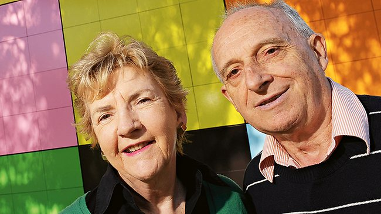
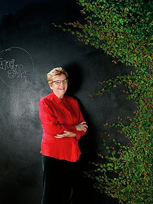

Old and invisible
PATRICIA EDGAR, THE AUSTRALIAN, SEPTEMBER 14, 2013

The author with Don, her husband of 54 years. Picture: Cameron Tandy Source: Supplied
NOT long ago I boarded a tram in Melbourne. Seated near the front was a woman who suffered from a mental disorder, and she was shouting abuse at every person who passed her by.
I sat down with my back to her and slightly inclined my head to glance as she shrieked at us. She saw my move and screamed out, "Bitch." Then she took another look at me and added, "Old bitch."
The word "old" is used commonly as a pejorative term. "You silly old bugger," was Bob Hawke's riposte to a 74-year-old man who challenged him on the campaign trail in Whyalla in 1989. When I had a hearing test recently I was told by the audiologist that my hearing was diminished, consistent with ageing. "That's what happens when you are old," she added, as if describing a condition akin to a disease.
Ageing can be a humbling experience for those fortunate enough to have survived the accidents and exigencies that befall us in life. We complain about its physical effects but most of us agree it's better than the alternative. In fact, increasing numbers of elders are enjoying their later years in ways that defy the stereotypes.
We who are old do not see ourselves as society defines us. For many, ageing is a liberating experience; we are consoled for any losses by a new sense of freedom and confidence. We don't fear the future and we don't worry so much about the opinions of others. But persistent assumptions about our incapacity undermine our well-being. The first time I encountered ageism I was 32 years old, setting up a research study in Darwin on the introduction of television to that city. I was working alone and ventured into a cafe, where I got into a conversation with a group of young people who were, I guessed, in their late teens and early 20s. The next day I returned to the cafe to be greeted by one of the same young men, who called out, "Here's the old bird from the south."
Women are the target of most acts of discrimination but men are not spared ageist stereotyping. When my husband, Don, was taken to hospital after smashing his foot in an accident, he overheard a nurse comment: "We've got an old one out there." Don was 44 at the time.
My doctor, a woman of 65, was enquiring about how I spend my time and we exchanged details of our interests. She said, "I like to sit and watch people in cafes. My daughter says to stop staring, it's embarrassing. But I tell her not to worry - people don't notice me staring; I'm invisible." And she is right. To those younger, we are a separate form of life. People generally do not look at old people. Simone de Beauvoir, in The Coming of Age, quotes Lucius Caecilius, a banker who lived in Pompeii: "What I find most lamentable about old age," he said, "is that one feels that now one is repulsive to the young."
It seems not a lot has changed in our perception of old age. Yet much has changed in the way we age and in our life expectancy. We can't define with any clarity who we regard as old anymore. I feel surprise to read, "An elderly man was hit by a car," only to discover he was 60 years old and may well have 30 years ahead of him. If the label "old" is applied to someone in her 60s as well as to a centenarian, then "old age" is the longest stage of life.
So, when is someone old? Is 50 the magic number? Is 70 the new 60? Are we old when we qualify for a Seniors Card? When we retire from the workforce? When we qualify for the pension? When we get sick? When we have grandchildren? When we get grey hair? When we access our superannuation? These points are arbitrary but all describe a boundary from which there is no return. Once we are defined as "old" we are assigned to a category. We are often patronised, ignored, shouted at, called love, dear and darling and expected to dwell on the margins of society.
Donald Hall, a writer for The New Yorker, recently described an incident when, after exiting a museum cafeteria, he stopped to admire a Moore carving from his wheelchair. He was approached by a guard, who bent over to address him. "The guard wagged a finger in my face, smiled a grotesque smile, raised his voice and asked, 'Did we have a nice din-din?'?" You can hear the condescension; visit any nursing home and you will hear the same tone. Old age does not conjure up images of vital, active, interesting people; we think instead of people who are in need of care, physically disabled, and losing control of their bodily functions. To live these years well, we need to be respected as individuals, have the ability to reinvent ourselves, our work and purpose and to have access to good medical advice.

Patricia Edgar: "Old age does not conjure up images of vital, active, interesting people." Picture: Julian Kingma Source: Supplied
We know that our bodies will go into decline and we will die of some failure or disease, but a neglected body will perish much sooner than one well cared for. Disease prevention is the optimal objective for living a successful, long life. I learnt, however, when I turned 70, that doctors were not so interested in seeing me.
Soon after my birthday, when I was told by my doctor I would no longer be reminded officially to have a two-yearly pap smear, my eyebrows went up. "It's OK," said the GP. "You can still come in if you wish - we just won't be notifying you anymore that a smear is due." Soon after, I went to see my gastroenterologist to arrange for a five-yearly colonoscopy. The procedure was completed, there were no problems and, as I was leaving, my doctor said, "You don't need to come back again." "You mean ever?" I enquired. "Yes," he replied. "But my father had bowel cancer in his mid-70s, that's why I come in for regular check-ups," I countered. "OK," he said, "you can come back."
A few months later I had my annual mammogram, and my consulting specialist of 20 years' standing said, "You're cancer-free after all this time, so you don't need to come back again." Having served 10 years as chair of the Breast Cancer Network of Australia, I am familiar with the statistics. I know that a woman's risk of breast cancer increases with age, and that if you have had breast cancer before - as I had 25 years ago - your risk is higher. My physician knew better than I that mutations in cancer genes accumulate with ageing, so I pressed him to explain. It turned out that he was retiring in a year's time. "What are you doing with all your records?" I asked. "I haven't thought about that," he replied. "I'll probably put them under the house." "What about giving them to your patients?" I suggested. "I'll think about that," was the response.
A little checking among my peers indicated that my experience of turning 70 was not unique. Several friends had been given the same message by their doctors - enough for me to conclude that the medical system wants to cull those over 70 from the groups receiving regular "expensive" procedures because the expenditure is no longer considered cost-effective.
I put this to my GP, who explained tactfully that life-expectancy statistics cut in about the time it would take a new cancer to develop. So if a person is cancer-free at 70 they will likely live to 78 or 82 (the current life-expectancy targets) if they get a new cancer. And as cancer is a disease of old age, many will certainly contract it. My GP effectively confirmed that we are deemed by the medical profession, unofficially at least, to have lived our expected life span, and if cancer or anything else catches up with us, that's too bad. Yet an increasing number of 70-year-olds remain active, defying current medical assumptions.
At 76, my life is far from circumscribed. I write, I publish, I engage; I support and see my family and friends regularly; I read, I watch movies, television and theatre, walk, drive and go to the gym; I chair an international foundation, I sit on a theatre board, I act as a mentor to a number of people and get called on for advice; I travel widely, enjoy new experiences, organise two homes, engage with the community and take an interest in politics. I enjoy the new freedom from past responsibilities, and the ability to decide what I will do and when I will do it. I enjoy my life with my husband of 54 years. I don't cause trouble and I help out where I can.
Yes, the years have taken some toll: I have arthritis and a successful hip replacement. Society may wish to define me as past my prime but I can see plenty of life to be lived yet. My lifelong friends are just as active and some are still working full-time at 75. Yet, just at the time we can expand our horizons, insurance companies raise the cost of travel insurance and disallow multiple-trip policies in a 12-month period to people over the age of 75 on the grounds that they are too great a health risk. Beyond 80, travel insurance coverage is almost impossible to acquire, no matter how healthy you may be.
The myth that health costs and aged care will be the straws that break our system's back derives from simplistic analysis. The longer we work, the more these costs will be relieved. Experts who look beyond the bottom line to examine the system point out there are many ways it can become more cost-effective. Medical policy designed to marginalise the "old" at 70 is not one of them. Since our life span will continue to increase, it would make sense to continue to narrow the gap between health, ill health, decline and death and increase quality of life as long as possible. Disease prevention in the final decades of life would be a sounder policy than risking the cost of lengthy morbidity through turning a medical blind eye.
No one is sure what to call those who fall within the 50-100-year span. As "old" is used so loosely, and society so reveres the image of youth, some people refuse to use the word at all; they don't even like "ageing". "Elders", "the third age", "new stage beyond midlife", "mature" and "seniors" all get an airing but there is no universally accepted term.
Among those I interviewed for my book, Lesley Falloon, at 93 a poster girl for late adulthood, speaks about what she will do when she gets old. Mary Owen, 92, thinks you get old when you allow others to make your decisions. Flora Noyce, 91, says: "I have always hoped to reach old age; I hope I get there."
Edited extract from In Praise of Ageing, by Patricia Edgar (Text Publishing, $32.99), out on September 25.